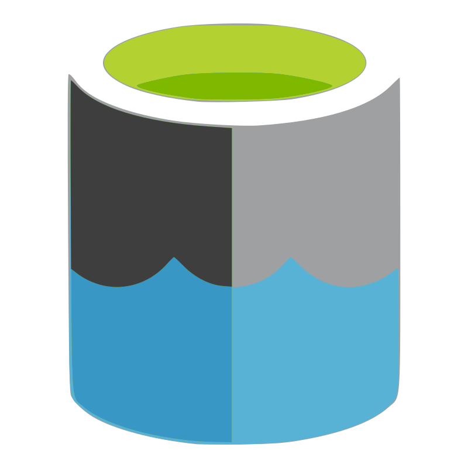
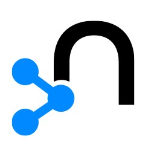

Integrations
Overview
XMPro has several different integrations:
- Agents are the building blocks of Data Stream Designer
(default Agents bulk download here). - Connectors integrate to third-party data sources in App Designer
(default Connectors bulk download here) - Visualization Blocks are the building blocks of App Designer to create rich user experiences
Agents
An Agent is a reusable object that forms the building block of a Data Stream. When several Agents are connected, a Data Stream is formed.
Each Agent is designed to perform a specific function in the stream. For example, they can be used to retrieve data from a database in real-time, display data, filter, sort the data, or save the data somewhere else, depending on the function of that individual Agent.
Looking for an Agent that is not on the list? Send us a request or check out the Framework to create a new Agent yourself.
Generative AI & Large Language Models
| Agent | Category | Tier |
|---|---|---|
| Azure AI Document Intelligence | Generative AI | 5 |
| Azure OpenAI | Generative AI | 4 |
| OpenAI Assistant | Generative AI | 5 |
| Ollama | Generative AI | 5 |
AI & Machine Learning
| Agent | Category | Tier |
|---|---|---|
| Anomaly Detection | AI & Machine Learning* | 5 |
| Azure ML | AI & Machine Learning | 5 |
| Binary Classification | AI & Machine Learning* | 5 |
| Boon Amber | AI & Machine Learning | 4 |
| Forecasting | AI & Machine Learning* | 5 |
| Kmeans Clustering | AI & Machine Learning* | 5 |
| MLflow | AI & Machine Learning | 5 |
| Multi Class Classification | AI & Machine Learning* | 5 |
| Python | AI & Machine Learning | 5 |
| Regression | AI & Machine Learning* | 5 |
| RScript | AI & Machine Learning | 5 |
Social & Communication
| Agent | Category | Tier |
|---|---|---|
| Listener, Action Agent | 1 | |
| Twilio | Action Agent | 1 |
Database & Technology
| Agent | Category | Tier |
|---|---|---|
| Azure Data Explorer | Listener, Context Provider, Action Agent | 2 |
| Azure Data Factory | Action Agent | 2 |
|  Azure Data Lake | Action Agent | 2 |
| Azure Digital Twin | Listener, Context Provider, Action Agent | 2 |
| Azure Event Hub | Listener, Action Agent | 2 |
| Azure IoT Hub | Listener | 2 |
| Cognite | Listener, Context Provider | 2 |
| Ethereum Smart Contract | Listener, Action Agent | 2 |
| Excel File Reader | Action Agent | 2 |
| ifm | Listener | 2 |
| InfluxDB | Listener, Context Provider, Action Agent | 2 |
| Litmus Edge OPC UA | Listener, Action Agent | 2 |
| Listener, Context Provider, Action Agent | 2 | |
| MOVUS | Listener, Context Provider, Action Agent | 2 |
| MySQL | Listener, Context Provider, Action Agent | 2 |
|  Neo4j | Listener, Context Provider, Action Agent | 2 |
| OData | Context Provider, Action Agent | 2 |
| ODBC | Listener, Context Provider | 2 |
| OPC DA | Listener, Action Agent | 2 |
| OPC UA | Listener, Action Agent | 2 |
| Oracle | Action Agent | 2 |
| Snowflake | Listener, Context Provider, Action Agent | 2 |
ERP
| Agent | Category | Tier |
|---|---|---|
| Coupa | Context Provider, Action Agent | 3 |
| Erbessed | Listener, Context Provider | 3 |
| iPOS | Action Agent | 3 |
| FinOps | Context Provider, Action Agent | 3 |
| OSIsoft PI | Listener, Context Provider, Action Agent | 3 |
| Salesforce | Listener, Context Provider, Action Agent | 3 |
| SAP | Context Provider, Action Agent | 3 |
 SAP HANA SAP HANA |
Context Provider, Action Agent | 3 |
Advanced App
| Agent | Category | Tier |
|---|---|---|
| FFT | Function | 4 |
| Nanoprecise | Listener, Context Provider, Action Agent | 3 |
| Signal Filter | Function | 4 |
| Sparkplug B | Listener, Action Agent | 4 |
| Tango | Listener, Context Provider | 3 |
| Telit deviceWise | Listener, Context Provider, Action Agent | 3 |
| Telit MQTT | Listener, Action Agent | 3 |
 Telit OPC UA Telit OPC UA |
Listener, Action Agent | 3 |
| WebScraper | Context Provider | 4 |
Open Source
| Agent | Category | Tier |
|---|---|---|
| Azure SQL | Listener, Context Provider, Action Agent | 5 |
 Convert Flow Units Convert Flow Units |
Function | 5 |
| CRC16 | Function | 5 |
| CSV | Listener, Context Provider, Action Agent | 5 |
| Fixed Width File Reader | Action Agent | 5 |
| Goal Seek | Function | 5 |
| HiveMQ | Listener, Action Agent | 5 |
| JSON | Context Provider, Transformation | 5 |
| Linear Interpolation | Function | 5 |
| Min Max | Function | 5 |
| MQTT | Listener, Action Agent | 5 |
| PDF Converter | Action Agent | 5 |
| REST API | Context Provider, Action Agent | 5 |
| Rounding | Function | 5 |
| SQL Server | Listener, Context Provider, Action Agent | 5 |
| XML File Reader | Action Agent | 5 |
XMPro Internal
| Agent | Category | Tier |
|---|---|---|
| Aggregate | Transformation | 6 |
| Alter Attributes | Transformation | 6 |
| Area Under the Curve | Function | 6 |
 Batch Identifier Batch Identifier |
Transformation | 6 |
| Broadcast | Transformation | 6 |
| Calculated Field | Transformation | 6 |
| Concatenate Row Values | Transformation | 6 |
| Data Conversion | Transformation | 6 |
| Edge Analysis | Transformation | 6 |
| Event Printer | Action Agent | 6 |
| Event Simulator | Listener | 6 |
| File Listener | Listener | 6 |
| Filter | Transformation | 6 |
| Geofence | Function | 6 |
| Group & Merge | Transformation | 6 |
| Join | Transformation | 6 |
| Meta | Action Agent | 6 |
| Missing Value Detector | Transformation | 6 |
| Missing Value Substitutor | Transformation | 6 |
| Normalize Fields | Transformation | 6 |
| Pass Through | Transformation | 6 |
| Pivot Table | Transformation | 6 |
| Random Number | Transformation | 6 |
| Row Count | Transformation | 6 |
| Row Padding | Transformation | 6 |
| Sort | Transformation | 6 |
| Threshold Monitor | Transformation | 6 |
| Transpose | Transformation | 6 |
| Trim | Transformation | 6 |
| Union | Transformation | 6 |
| Unzip | Action Agent | 6 |
 Window Window |
Transformation | 6 |
| XMPro App | Action Agent | 6 |
Recommendations
| Agent | Category | Tier |
|---|---|---|
| Close Action Request | Recommendation | 6 |
| Read Action Request | Recommendation | 6 |
| Read Recommendation | Recommendation | 6 |
| Resolve Recommendation | Recommendation | 6 |
| Run Recommendation | Recommendation | 6 |
| Update Recommendation | Recommendation | 6 |
Download Default Agents
Tier 5
Download the tier 5 files here.
Use these individual files if you are not on v4.1.13 or higher:
| Action Agents AI & ML |
Context Providers Functions |
Listeners |
|---|
*Note: Links for the larger AI & ML Agents are on their individual documentation pages.
Tier 6
Download the tier 6 files here.
Use these individual files if you are not on v4.1.13 or higher:
| Action Agents Functions |
Listeners Recommendations |
Transformations |
|---|
Connectors
A Connector is a pre-built integration plug-in for the XMPro App Designer that allows you to connect to third-party data sources without coding.
Whereas the Agents in a published Data Stream continuously poll for data, the Connectors in a published App retrieve data on an ad-hoc basis.
Note
Download the tier 5 & 6 Connector files here.
Database & Technology
| Connector | Tier |
|---|---|
| Azure Data Explorer | 2 |
| TSA Azure Data Explorer | 2 |
| Azure Digital Twin | 2 |
| Neo4J | 2 |
| Snowflake | 2 |
ERP
| Connector | Tier |
|---|---|
| Erbessd | 3 |
| OSIsoft PI | 3 |
| OSIsoftPI Histogram | 3 |
Advanced App
| Connector | Tier |
|---|---|
| Nanoprecise | 3 |
Open Source
| Connector | Tier |
|---|---|
| Azure SQL | 5 |
| HTTP | 5 |
| JSON | 5 |
| REST API | 5 |
| SQL Server | 5 |
| TSA SQL Server | 5 |
XMPro Internal
| Connector | Tier |
|---|---|
| Data Streams | 6 |
Visualization Blocks
An App Designer visualization block allows a no-code way to integrate with third-party systems and create rich user experiences. Listed below are some of the integration blocks found in the App Designer toolbox:
| Visualization Block |
|---|
| Autodesk Forge |
| D3 Visualization |
| Esri Map |
| Pivot Grid |
| Power BI |
| Time Series Chart |
| Unity |
Last modified: June 13, 2025